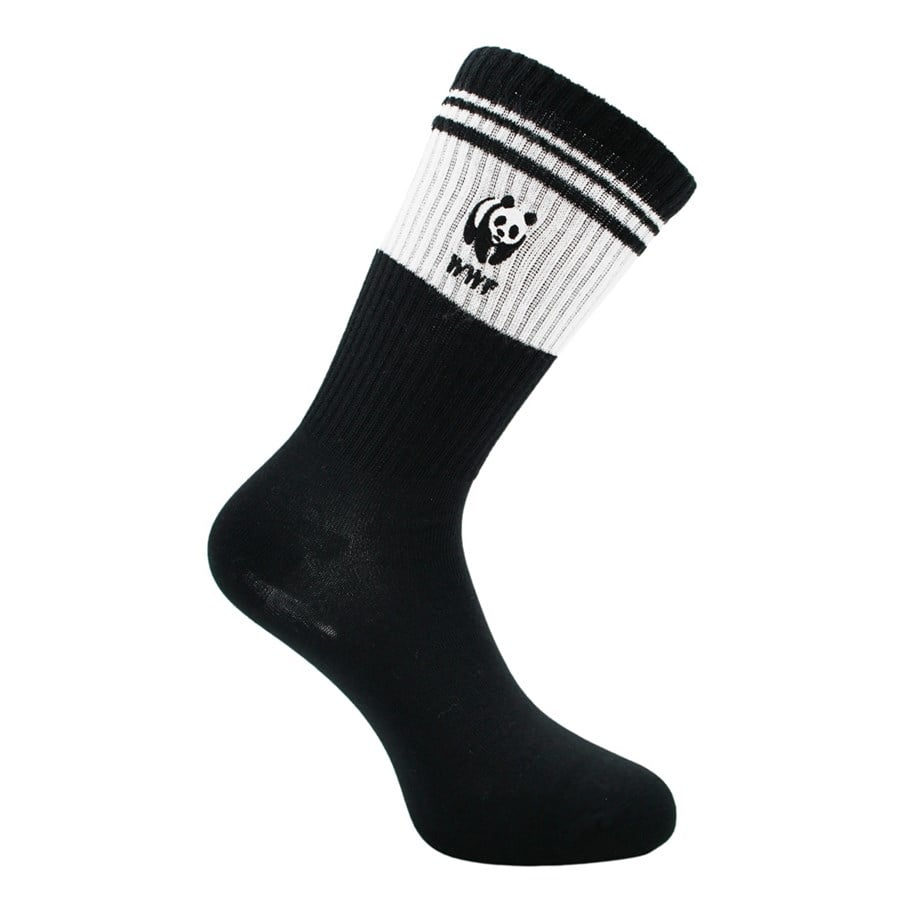
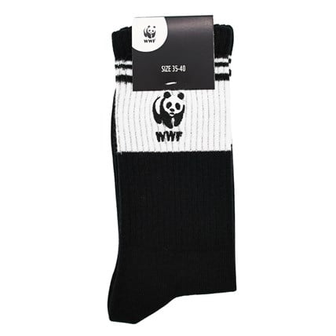
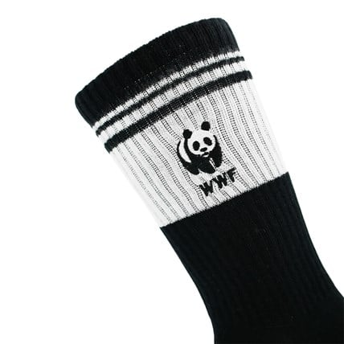
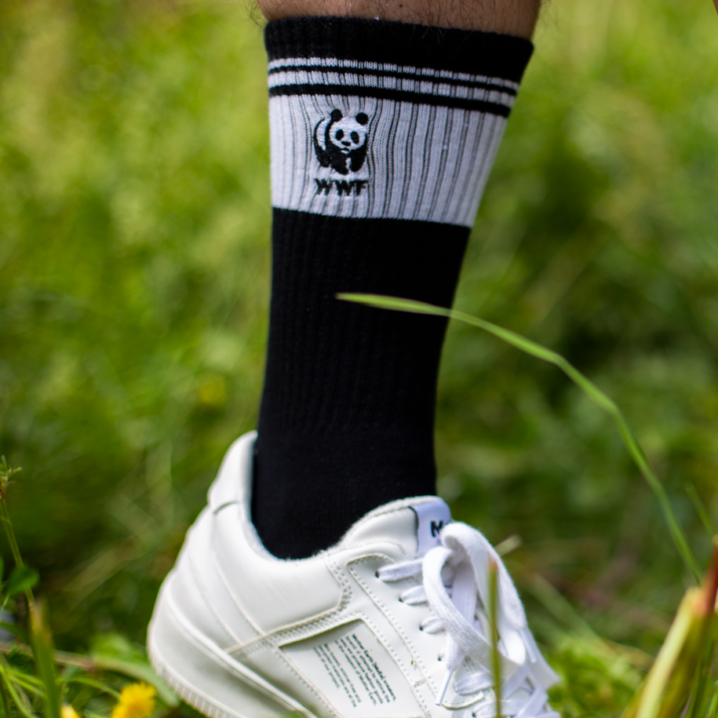
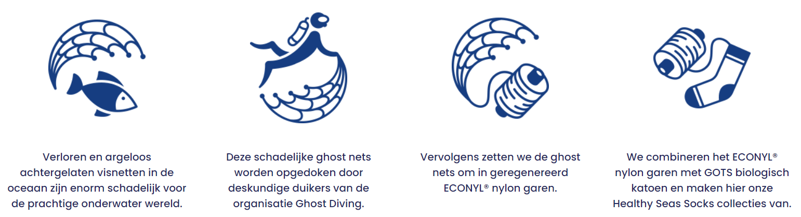

- 
- 
- 
- 
Na het succes van de witte sportsokken is deze er nu ook in het zwart. Sportsokken zijn helemaal retro. En met het geborduurde WWF logo er op maak je helemaal een statement! Bovendien zijn deze sokken deels gemaakt van garen dat is gemaakt van achtergelaten en ronddobberende visnetten. In zee zijn deze netten schadelijk voor het zeeleven. Door middel van een milieu vriendelijk proces worden de visnetten omgezet in een 100% sustainable nylon.
Bovendien zijn deze sokken deels gemaakt van garen dat is gemaakt van achtergelaten en ronddobberende visnetten. In zee zijn deze netten schadelijk voor het zeeleven. Door middel van een milieu vriendelijk proces worden de visnetten omgezet in een 100% sustainable nylon.
Deze heerlijke zachte en comfortabele sokken worden deels gemaakt van achtergelaten en ronddobberende visnetten. In zee zijn deze netten schadelijk voor het zeeleven. Door middel van een milieu vriendelijk proces (zie afbeelding hieronder) worden de visnetten omgezet in een 100% sustainable nylon.
Deze heerlijke zachte en comfortabele sokken worden deels gemaakt van achtergelaten en ronddobberende visnetten. In zee zijn deze netten schadelijk voor het zeeleven. Door middel van een milieu vriendelijk proces (zie afbeelding hieronder) worden de visnetten omgezet in een 100% sustainable nylon.
Het toplabel aan de sokken is gemaakt van FSC-karton.
Na het succes van de witte sportsokken is deze er nu ook in het zwart. Sportsokken zijn helemaal retro. En met het geborduurde WWF logo er op maak je helemaal een statement! Bovendien zijn deze sokken deels gemaakt van garen dat is gemaakt van achtergelaten en ronddobberende visnetten. In zee zijn deze netten schadelijk voor het zeeleven. Door middel van een milieu vriendelijk proces worden de visnetten omgezet in een 100% sustainable nylon.
Bovendien zijn deze sokken deels gemaakt van garen dat is gemaakt van achtergelaten en ronddobberende visnetten. In zee zijn deze netten schadelijk voor het zeeleven. Door middel van een milieu vriendelijk proces worden de visnetten omgezet in een 100% sustainable nylon.
Retro sportsokken - zwart met
panda logo - maat 35-40
Met iedere aankoop steun je het Wereld Natuur Fonds in de strijd voor bescherming van wereldwijde natuur!
- ✔ Deze sokken zijn gemaakt van ECONYL® nylon garen, dat is gemaakt van oude visnetten.
- ✔ Verkrijgbaar in de maten 35-40 en 41-46.
Ook verkrijgbaar in voordeelbundel
Wil je deze sokken vaker dragen? Bestel dan onze voordeelbundel van 5 paar en profiteer van 20% korting!
Ga naar de voordeelbundel >Supporting Healty Seas
Een deel van de opbrengst van deze sokken gaat naar de Healthy Seas organisatie. Zij zetten zich in voor schonere zeeën door het opduiken van achtergelaten visnetten. Deze vormen de basis voor de vervaardiging van deze sokken.
Met je aankoop van deze sokken doe je dus extra veel voor het milieu.
Meer informatieDe IUCN Rode Lijst geeft aan hoe het er voor staat met dier- en plantsoorten. Elk dier of plant op de lijst is ingedeeld op een schaal van 7 statussen. Hoe hoger op de lijst, hoe belangrijker het is om samen met WWF dit dier of deze plant te beschermen. Voor het dier dat centraal staat bij dit product geldt de status: